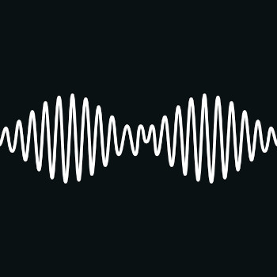
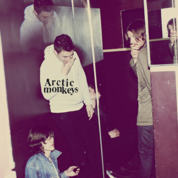
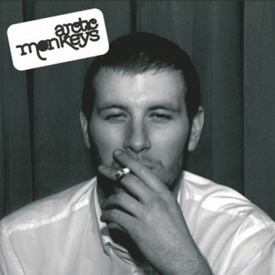

Desde sua formação em 2002 na cidade de Sheffield, Inglaterra, o Arctic Monkeys tem sido uma força revolucionária no cenário do rock alternativo. Com sua mistura única de indie rock, post-punk revival e letras observadoras, a banda rapidamente se destacou como uma das mais influentes de sua geração.
O Arctic Monkeys ganhou notoriedade inicialmente através da internet, onde suas primeiras demos circularam amplamente entre os fãs e críticos musicais. Esse boca a boca digital culminou em um sucesso estrondoso com o lançamento do álbum de estreia "Whatever People Say I Am, That's What I'm Not" (2006).
Ao longo dos anos, o Arctic Monkeys demonstrou uma capacidade única de evoluir e se reinventar musicalmente. Do som crú e acelerado de seus primeiros anos para os territórios mais sombrios e psicodélicos explorados em "Humbug" (2009), até a fusão envolvente de rock, R&B e indie pop encontrada em "AM" (2013), a banda sempre desafiou as expectativas e expandiu suas fronteiras sonoras.
AM - 2013

Descrição do álbum 1...
Humbug - 2009

Descrição do álbum 2...
Whatever people says what i am that's what i'm not - 2006

Descrição do álbum 3...